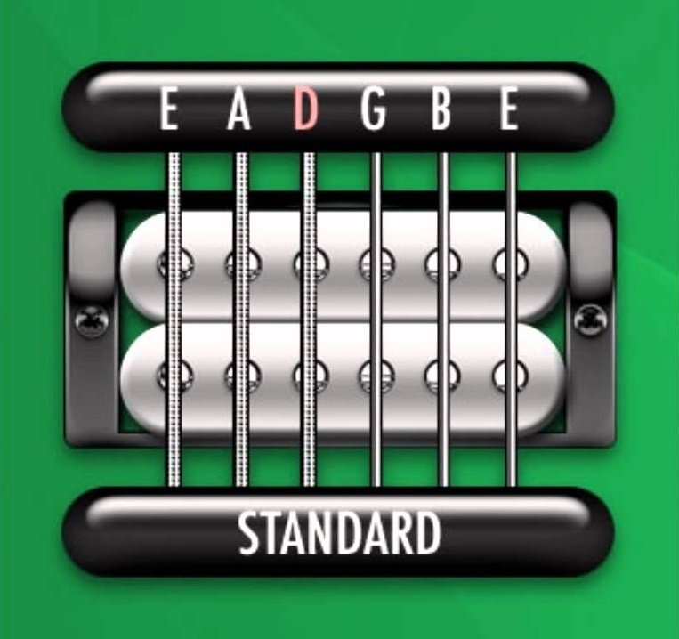
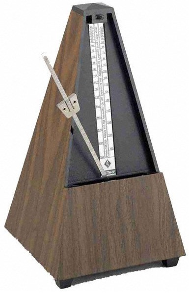

Utilities
In order to improve your playing, practice is key. There are many utilities that are available to a guitarist that can be used to aid practicing. With these resources being readily available, it's almost essential that guitarists utilize them. On this page you will find some of the most helpful tools you can use to make sure you get the most out of practice.
| Utility | Description | Link |
|---|---|---|
| Guitar Tuner | One of the most important parts of playing guitar is making sure your instrument is in key. If you're not in key, a number of things can go wrong. You won't match your bandmate's pitch on their instrument, you'll throw off the vocalist's singing, and worse of all you'll teach your ear bad habits. With enough time playing, you'll develop your own sense of pitch and can hear what each note should sound like. Being out of key won't help with this! Here is an online tuner that you match the pitch of your strings to. This will also help with hearing what the correct pitches sound like. | 
Fender Online Guitar Tuner |
| Metronome | Just like being in key, staying in time with your playing is vital. If you're not in time, your playing will just sound like a jumbled mess that has no direction. One of the most common and old-fashion ways to practice staying in time is by using a metronome. With the metronome, you will be able to hear a pulsing beat that you can use to keep your rhythm while you're playing. You can also adjust the speed settings, so you can start slow and work your way up to faster speeds. |  Best Metronome |